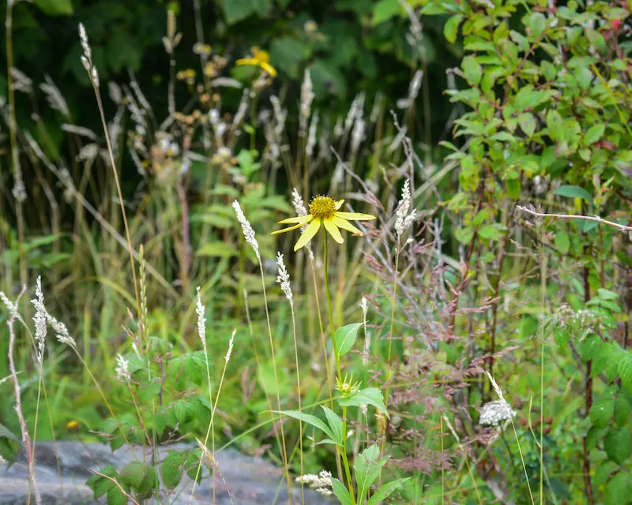
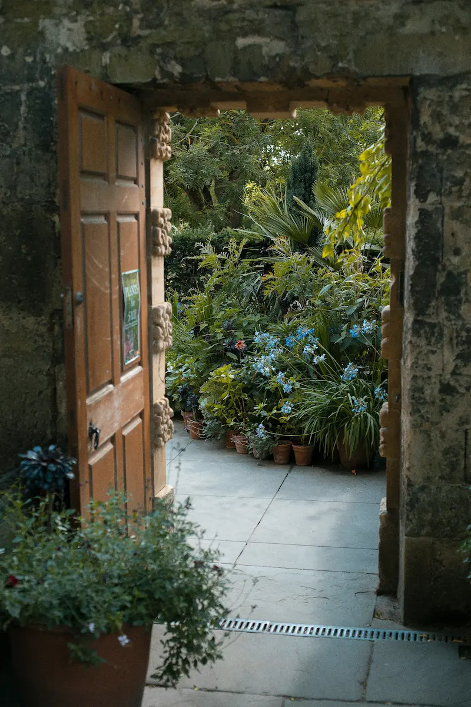
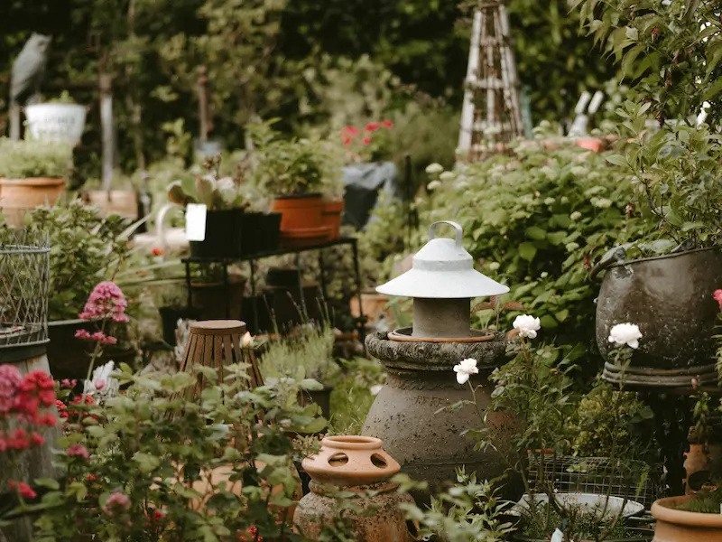
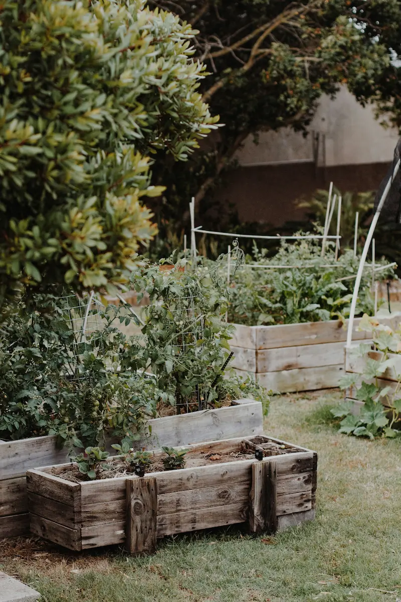

Bee Friendly Gardening
How to Help Bees in the Garden – Bee Friendly Gardening in the UK
Last updated: 15 August 2026
You do not need to be a beekeeper or have a large garden to help bees. In towns, villages and cities across the UK, bee friendly gardens, balconies and wildlife corners provide vital nectar, pollen, water and shelter for honey bees, bumblebees and solitary bees. A few well chosen plants and some simple changes in how you garden can make a bigger difference than most people realise.
This guide explains how to help bees in the garden using evidence based, practical steps. It focuses on a cool, temperate UK climate and is written for anyone who wants to support pollinators – whether you keep hives or simply enjoy watching bees on the flowers outside your door.
It also helps to connect gardening with the bigger picture: how bees pollinate crops and flowers, how bees make honey from nectar-rich forage, the seasonal changes in the colony, and the wider practical advice in Help the Bees for supporting pollinators in everyday spaces.
Why Bee Friendly Gardens Matter for Honey Bees and Wild Bees
Bees do not see property boundaries. From their point of view, every garden, verge, park, allotment and hedgerow is part of one large, patchy landscape. When that landscape is rich in flowers and mostly free of pesticides, colonies are more likely to thrive. When it is dominated by hard surfaces, sterile lawns and short bursts of blossom, bees must work harder to find food.
Different pollinators use different parts of the garden. Honey bees may work high flowering trees, while bumblebees prefer deeper, tubular flowers and solitary bees nest in bare soil, stems, walls or dead wood. This variety is also part of how bees pollinate crops and flowers across the wider landscape. A bee friendly garden in the UK gives them all something:
- nectar for energy
- pollen for brood food
- clean water
- safe places to nest and overwinter
The sections below show how you can provide these in practical, manageable steps, whatever your garden size.
Quick Ways to Help Bees in Your Garden
If you only change a few things this year, make them these. Each card is a simple, high impact action you can take in a weekend or less. Together, they form a practical version of the wider advice in Help the Bees.
1. Plant More Nectar Rich Flowers
Choose single, open flowers rather than very double blooms. Aim for a mix of early, mid and late season flowering plants so bees always find something to visit.
2. Stop Using Insecticides
Avoid insecticides, especially products labelled harmful to bees. Healthy, diverse planting and good soil often reduce pest problems without chemicals.
3. Provide a Safe Water Source
Use a shallow dish with stones or marbles so bees can drink without drowning. Refresh the water regularly and keep it in light shade if possible.
4. Leave Some Wild Corners
Allow a patch of grass to grow longer, leave seed heads over winter and keep a small pile of logs or branches. These micro habitats support solitary bees and other beneficial insects.
5. Grow Herbs for Bees
Lavender, thyme, marjoram, sage, chives and mint are all excellent plants for bees in the UK. They work well in beds, pots and balcony planters.
6. Reduce Lawn Area or Mow Less Often
Allowing clover, selfheal and daisies to flower in parts of the lawn can provide valuable nectar, especially in smaller gardens.
Best Plants for Bees in the UK
A good bee friendly garden is built on plant choice. Rather than chasing a single "bee plant", aim for a diverse mix that suits your soil, light and style of gardening. The lists below are not exhaustive, but they give a strong starting palette. Good planting supports nectar and pollen collection, which in turn affects how bees make honey and build stores through the season.
Native & Near-Native Wildflowers
- Knapweed, field scabious, oxeye daisy, bird's foot trefoil
- Viper's bugloss, wild marjoram, red clover, yarrow
- Meadow cranesbill, cowslip, foxglove (care with children and pets)
Garden Perennials & Shrubs
- Lavender, catmint, sedum, echinacea, rudbeckia
- Hardy geraniums, hebe, heather (especially winter flowering varieties)
- Buddleia, rockrose, weigela, flowering currant
Herbs for Pots, Beds and Balconies
- Thyme, oregano, marjoram, sage, rosemary
- Mint (best in pots so it does not spread too far)
- Chives, borage, fennel, lemon balm
Trees & Larger Shrubs
- Apple, pear, plum and other fruit trees
- Willow, hawthorn, blackthorn and field maple
- Lime (some species), rowan, holly and crab apple
Bee Friendly Planting Plans for Different Spaces
Every outdoor space can be turned into a bee friendly garden, even if it is mostly paving or a rented balcony. These example planting plans are not strict designs, but starting points you can adapt.

Small Garden (Around 3×3m)
Goal: one rich, mixed border that flowers for most of the year.
- Back: small fruit tree or crab apple; spring flowering shrub.
- Middle: lavender, catmint, hardy geraniums, echinacea or rudbeckia.
- Front: bulbs (crocus, snowdrops, alliums), thyme and low herbs.

Balcony or Patio Plan
Goal: layered pots that cope with wind and limited space.
- Large pots: small shrubs or dwarf fruit trees.
- Medium pots: lavender, rosemary, sage, marjoram, catmint depending on sun or shade.
- Window boxes: trailing flowers and compact herbs.

Wildlife Corner Plan
Goal: a slightly wilder patch that supports many species.
- Longer grass with native wildflowers or a small meadow mix.
- Log pile, stones or a low wall for nesting and shelter.
- Hedge or mixed shrubs for blossom, berries and structure.

Herb & Kitchen Border Plan
Goal: edible plants that feed people and pollinators.
- Back: rosemary, sage, fennel.
- Middle: oregano, marjoram, chives.
- Front: thyme, creeping herbs, low flowers around vegetable beds.
Month by Month Nectar Flow in the Garden
In a monthly beekeeping calendar, you often hear about "nectar flows" – periods when many flowers produce abundant nectar. Gardens can strengthen or soften these peaks and troughs. The grid below shows typical garden highlights in a UK climate and links closely with the seasonal changes in the colony that beekeepers see from spring to winter.
January
Snowdrops, winter heathers, mahonia, early hellebores.
February
Crocus, snowdrops, willow catkins, heather, early bulbs.
March
Flowering currant, blackthorn, primroses, more bulbs, some herbs.
April
Fruit blossom, dandelions, flowering shrubs, early perennials.
May
Hawthorn, apple, alliums, early catmint and geraniums.
June
Lavender, catmint, foxglove, many roses, meadow flowers.
July
Herbs in full flower, buddleia, scabious, knapweed, clovers.
August
Sedums, late lavender, heather, sunflowers, echinacea.
September
Late herbs, ivy coming into flower, some heathers and shrubs.
October
Ivy, autumn asters, some long flowering perennials and shrubs.
November
Late ivy and any sheltered, untrimmed flowers still in bloom.
December
Mahonia, some winter heathers and shrubs in mild spells.
You do not need all of these plants. The aim is simply to avoid long gaps where nothing in your garden offers nectar or pollen.
Plant Selector for Sun, Shade and Soil Type
Use this simple selector to match plants for bees in the UK to your conditions. Always check final size and suitability for your exact site.
| Plant | Light | Soil / Moisture | Season of Interest | Notes |
|---|---|---|---|---|
| Lavender | Full sun | Well drained, not waterlogged | Summer | Excellent for honey bees and bumblebees; ideal for borders or pots. |
| Catmint (Nepeta) | Sun to light shade | Average, reasonably drained | Late spring to summer | Long flowering, copes well with many garden soils. |
| Heather (spring or winter flowering) | Sun | Best in acidic, free draining soil | Late winter to early spring or late summer | Valuable in pots if soil conditions in beds do not suit. |
| Foxglove | Partial shade | Moist, humus rich soil | Early to mid summer | Attractive to bumblebees; take care with toxicity around children. |
| Wild marjoram / oregano | Sun | Well drained, tolerates poor soils | Mid to late summer | Excellent nectar source and useful culinary herb. |
| Fruit trees (apple, pear, plum) | Sun to light shade | Average garden soil, not waterlogged | Spring blossom | Benefit both bees and harvests; good anchors in small gardens. |
| Crab apple | Sun | Most soils except very waterlogged | Spring blossom, autumn fruit | Compact varieties suit many gardens and support pollinators. |
| Thyme | Full sun | Free draining, poor to average soil | Summer | Ideal for pots, edging and between paving stones. |
| Hawthorn hedge | Sun to light shade | Many soils, fairly tolerant | Spring blossom, autumn berries | Supports bees, birds and other wildlife; good boundary plant. |
How to Create a Bee Friendly Garden – Step by Step
This practical sequence mirrors the HowTo guide in the structured data above. You can follow it whether you have a blank plot, an existing garden or only a patio. If you are completely new to beekeeping or pollinator support, this also pairs well with Getting Started.
- Observe your space. Spend a few days noticing sun and shade, wind and shelter, damp patches and dry corners. This tells you where plants will thrive without constant intervention.
- Decide what you can change and what must stay. Paths, sheds and boundaries might be fixed, but pots, beds and lawn areas are flexible. Even a narrow strip can become a nectar rich border.
- Choose a plant palette. Select a mix of trees, shrubs, perennials, bulbs and herbs that suit your conditions. Make sure you have flowers in early spring, high summer and autumn as a minimum.
- Prepare the ground or containers. Remove persistent weeds where necessary, add compost to tired soil and use deep pots for long term plants. In very poor soil, raised beds or large containers are often easier.
- Plant in groups rather than single specimens. Bees find it easier to work clusters of the same flower than isolated plants. Aim for small drifts or clumps to make their foraging efficient.
- Add water and habitat. Place a shallow water dish with stones nearby and provide at least one area where stems, leaves or logs are left undisturbed for insects to use.
- Maintain gently and avoid pesticides. Hand weed, mulch, prune lightly and observe which plants are most popular with bees. Over time, favour those and replace less useful plants when gaps appear.
Common Gardening Mistakes That Accidentally Harm Bees
Most gardeners want to help wildlife, but a few common habits can work against that aim. Being aware of them makes it easier to avoid problems.
Over tidy gardens
Removing every dead stem, leaf pile and patch of bare soil leaves fewer nesting and overwintering sites for insects.
Heavy pesticide use
Insecticides, some fungicides and weedkillers can all harm bees directly or indirectly. Healthy plants and good soil structure are more resilient.
Only planting summer colour
Filling borders with mid summer flowers but neglecting early spring and autumn leaves long gaps in forage availability.
Choosing form over function
Very double or sterile flowers may look impressive but often provide little usable nectar or pollen for bees.
Bee Friendly Gardening – Frequently Asked Questions
These questions mirror the topics in the structured data above and reflect common searches such as "how to help bees in the garden", "plants for bees UK" and "do I need a bee hotel?". They also connect gardening with broader topics such as pollination, forage and wildlife friendly management.
To help bees in a UK garden, plant nectar rich flowers that bloom from early spring to late autumn, avoid using insecticides, provide shallow water with safe landing places and leave some areas a little wilder for nesting and overwintering insects.
Good plants for bees in the UK include lavender, heather, catmint, crocus, snowdrops, borage, foxglove, thyme, marjoram, sedum, fruit trees and many native wildflowers such as knapweed and field scabious.
Many native plants support a wide range of pollinators, but bees will also visit non native species that provide accessible nectar and pollen. A mix of native wildflowers, flowering shrubs, herbs and garden perennials usually works well in UK bee friendly gardens.
Yes, even a small balcony or patio can help bees if you grow pots of lavender, herbs, trailing flowers and small shrubs, and provide a shallow water dish. Height and shelter can make balconies surprisingly good for pollinators.
Many double flowers produce little or no accessible nectar or pollen because the extra petals replace the fertile parts of the flower. Bees may struggle to use them, so single or semi double varieties are usually better choices for a bee friendly garden.
Yes, bees collect water for cooling the hive and diluting honey. A shallow dish with stones or marbles for safe landing provides a simple, bee safe water source. Change the water regularly to keep it fresh.
Bee hotels can support some species of solitary bees if they are well designed, securely fixed and maintained, but undisturbed banks, old walls, dead stems and log piles are just as valuable. A mix of nesting options is ideal in a wildlife friendly garden.
A wildlife friendly garden often looks less formal, with some longer grass, dead stems left over winter and areas where leaves and twigs are not tidied away. Structure still matters, but allowing some controlled mess gives bees and other insects places to nest and shelter.
Yes, many vegetables and fruit crops rely on pollinators. Combining vegetables with flowering herbs and companion plants can support both bees and harvests. The main change is to avoid insecticides and aim for healthy, resilient plants instead.
In many UK areas, bees and other pollinators will begin visiting new flowers within days or weeks once plants start to bloom. It can take a season or two for shrubs and perennials to reach full flowering potential, so bee activity often increases year on year.
Yes, focusing on diverse, pesticide free planting, continuous flowering, water and nesting habitat supports honey bees, bumblebees and solitary bees. Different species use different flowers and nesting sites, so variety is key in a bee friendly garden.
Absolutely. Most UK bee species are wild, and many never live in hives at all. A bee friendly garden that offers flowers, water and nesting habitat supports honey bees from local beekeepers as well as bumblebees and solitary bees.
Native wildflowers are very valuable, but many non native herbs and perennials also provide excellent forage. A mixed approach usually works best, provided flowers are rich in nectar and pollen and not heavily pesticide treated.
No. Most successful gardens evolve over time. You can add a few plants each season, gradually building up a long flowering, bee friendly mix without overwhelming yourself.
You are likely to see some wasps where there is food and shelter, but they are part of the natural balance and also control some garden pests. Simple steps such as not leaving sugary drinks uncovered in late summer reduce nuisance.
Yes. Many people prefer a tidy space near the house and deliberately allocate a corner, boundary strip or raised bed as a more relaxed, wildlife focused zone. Clear edges and paths can make even a "wild" area look intentional.
Not necessarily. Reducing mowing frequency, raising the cut height or allowing a portion of the lawn to flower with clover and daisies can help, even if other areas are kept shorter.
Over time you should see more variety in the insects visiting your flowers through the season. Keeping simple notes or photos can help you spot patterns and gaps you might want to fill.
For honey bee biology and management, explore the Honeybee Facts, behaviour, pollination and How Bees Make Honey sections on this site. For wider pollinator conservation, your local beekeeping association and wildlife groups are valuable sources of regional advice.